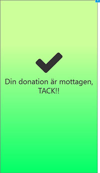
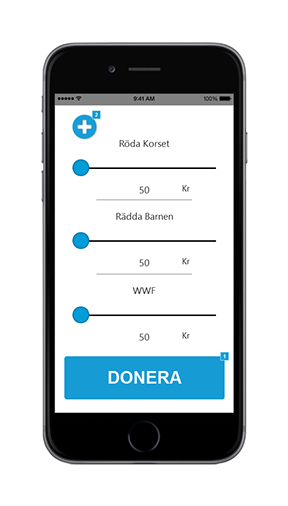

Back


Donera
Donera is made to make it simpler for those who want to donate to charity. By having one platform registered with all charitable organizations, there is now needing to sign up for a fixed monthly payment. Just simply add those charities you want to help, and use the sliders to regulate the amount you want to give. The transaction is hocked up to your mobile bank-id, which makes it fast and simple to donate.
This project is developed by myself on my spare time, Are you interested to try the prototype developed in Axure, please press here.
#UX-Design #interaktionsdesign #Axure #Prototyp #Hi-fi
